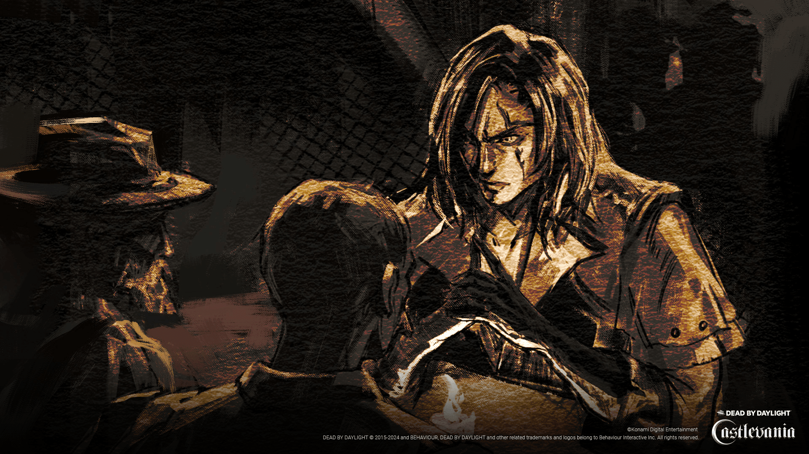

In the year 1476, fear swept the Romanian countryside. Monsters of myth and legend ruled the night. Some said they were commanded by a mysterious member of the nobility; a man who had traded his immortal soul for eternal life. Count Dracula. The besieged villagers begged Trevor Belmont to save them. Trevor, like his ancestors, possessed supernatural powers. Because of those abilities, he was both feared and shunned by the people of Wallachia. But now facing a greater threat, the terrified citizenry beseeched him to irradicate this evil creature. Even as Trevor grappled with his own demons, he dispatched Dracula's minions. He confronted the Count himself in his throne room and defeated him by using the mighty whip passed down to him by his ancestors. The Vampire Killer.
With the monster finally dead, Trevor retired to a small home in the hills away from the common people who still regarded him with trepidation. Years later, darkness intruded on his idyllic existence. Nightmares of the undead filled him with dread. Upon hearing rumours of mysterious disappearances in a nearby village, he worried that the nightwalker had returned. He investigated and heard whispers of a cold, black fog that came in the night and began to suspect that this evil was something different. Something just as dark and equally dangerous. A sudden premonition filled him with terror. Could his family be in danger? Hurrying back home, he found the village deserted with a thick, black creeping fog rising from the ground. He reached for his whip only to discover it was gone. Before he realized what was happening, he found himself in a bleak and terrifying dimension of endless gloom.
